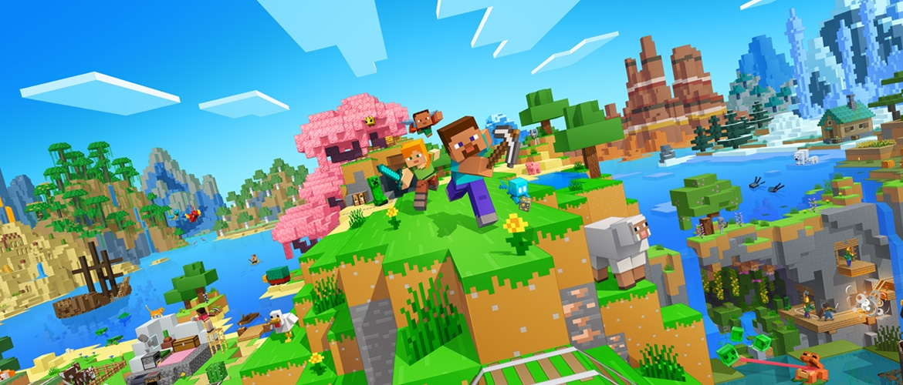

How Minecraft Affected My Journey into Web Development
October 6, 2026 by Jahmari Rhone
When I was a child, I would do anything to get my hands on video games. This included a variety of games, such as Call of Duty, Fortnite, Roblox, etc. However, the one that stood out to me most was Minecraft. It is a 3D Sandbox game that allowed me to push the limits of my creativity. Whether that be through finding ways to survive difficult situations, building various structures and farms, developing circuits through Redstone(a set of blocks used for this specific purpose in the game), or annoying my friends. Through experiencing this game, I was able to experience what it means to understand problems and develop solutions which impacted my decision to pursue computer science.

Along with this, Minecraft also helped me to develop my ability to work in teams. Sometimes, my friends and I used to come together in large groups and play a gamemode called "Factions". Fundamentally, groups of people form a faction and embark on a journey to make a name for themselves as powerful and conquer any other faction on the server. Each member of a faction had a role to play from start to finish, whether that be: builders that create impenetrable structures that the faction uses as a base, fighters that engage in player vs player combat, farmers that develop intricate machines to gather resources, or spys which infiltrate other factions to find weaknesses from within. These are some of my most fond memories of the game, and they serve as motivation in a sense, and are what allowed me to become a versatile 'team player' in all aspects of my life.